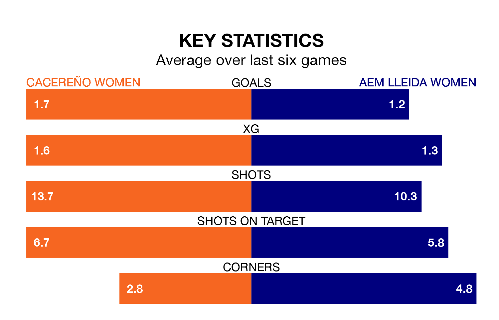

Mid-season relegation candidates Cacereño Women face a challenge against high-flying AEM Lleida Women on Sunday.
Cacereño Women are 11th in the Primera Federación Femenina table, and have picked up four wins and one draw in their 15 games to date.
AEM Lleida, meanwhile, are fourth in the standings with 28 points, having won eight and drawn four, and are six points behind table-toppers Espanyol W.
With 16 goals in 15 games so far this season, AEM Lleida are scoring at below the league average rate with 1.1 goals per game. But they are conceding fewer than average too, letting in 10 goals at a rate of 0.7 per game.
Cacereño, meanwhile, are above average scorers, with 1.3 goals per game, compared to a league average of 1.2. They have conceded 2.1 goals per game.
The home team are in disappointing form in Primera Federación Femenina, with two wins and four losses from their last six games.
With four wins and two draws over that period, the visitors' form is much better – they have taken 14 points from 18, compared to Cacereño's six.
Cacereño's last match was on Sunday, a 1-0 loss against Logroño Women.
AEM Lleida beat Madrid II Women 2-0 last time out, also on January 21.
Updated: 09:18 (UTC), 23/01/24